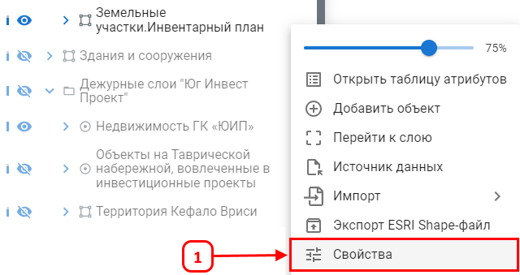
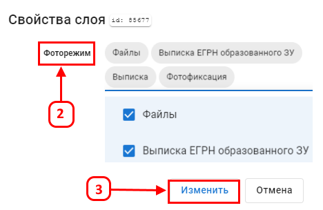
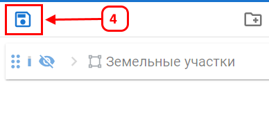

Фоторежим
Фоторежим позволяет использовать результаты фотофиксации для визуального контроля качества работ, отображая прикрепленные к объектам фотографии прямо на карте.
Активация фоторежима:
- Откройте Свойства слоя (1).

- Если в слое присутствует поле типа Файл, в которое загружены файлы, выберите опцию Фоторежим (2). Если такого поля нет, параметр Фотослой отображаться не будет.
- Настройте и выберите соответствующие поля с прикрепленными файлами.
- Нажмите Изменить (3), чтобы сохранить изменения.

- После настройки сохраните изменения слоя (4).

При проколе на карте объектов "Фоторежима" будут отображаться фотографии прикрепленные к объектам.